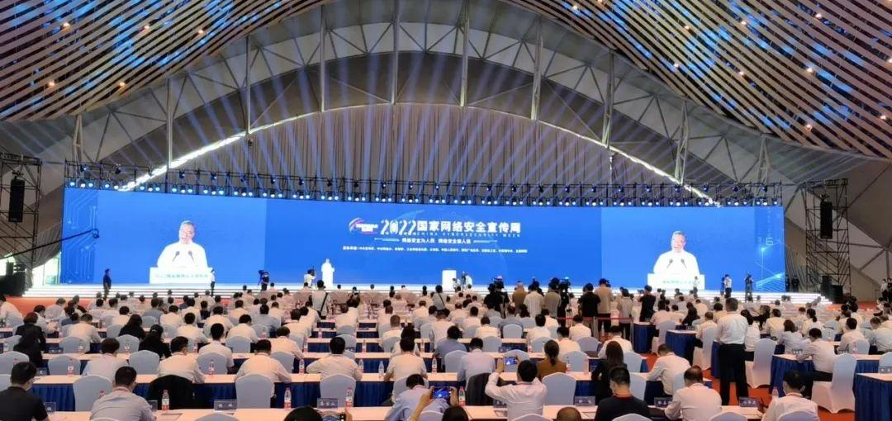
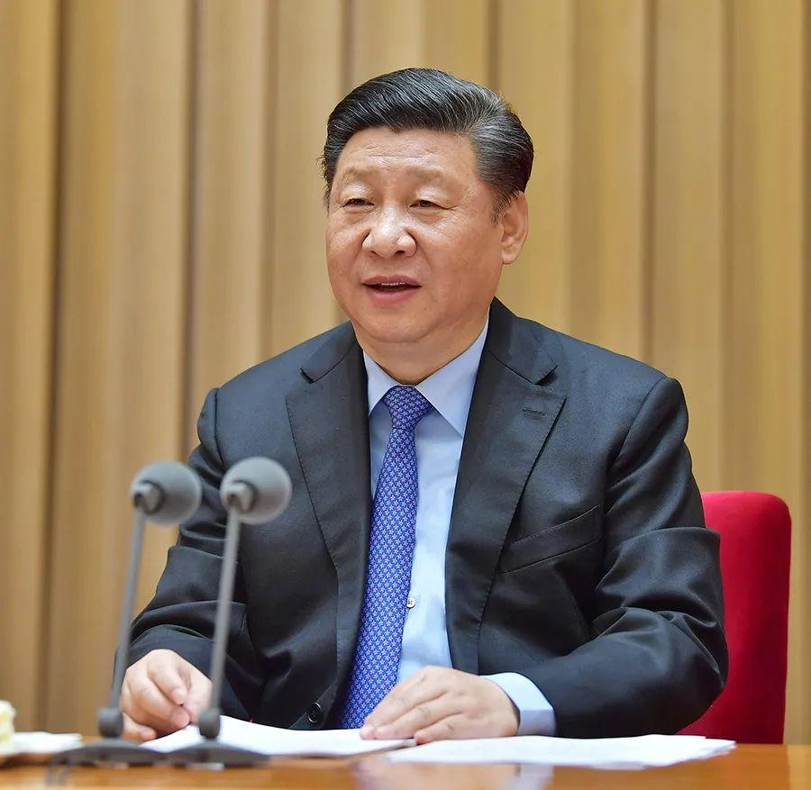

9月5日至11日，2022年国家网络安全宣传周在全国范围内开展。举办网络安全宣传周、提升全民网络安全意识和技能，是国家网络安全工作的重要内容。习近平总书记曾多次强调网络安全意识的重要性，并对强化网络安全意识提出具体要求。今天，
党建网微平台梳理了习近平总书记的部分相关重要论述，与大家一同学习。
数字经济、互联网金融、人工智能、大数据、云计算等新技术新应用快速发展，催生一系列新业态新模式，但相关法律制度还存在时间差、空白区。网络犯罪已成为危害我国国家政治安全、网络安全、社会安全、经济安全等的重要风险之一。
——2020年11月16日，习近平在中央全面依法治国工作会议上的讲话
坚持网络安全为人民、网络安全靠人民，增强网络安全防御能力和威慑能力
转载请注明来源：党建网微平台
监制：张振明
责编：刘文韬
编辑：王碧薇
制作：张 璋